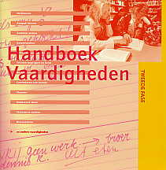
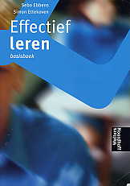
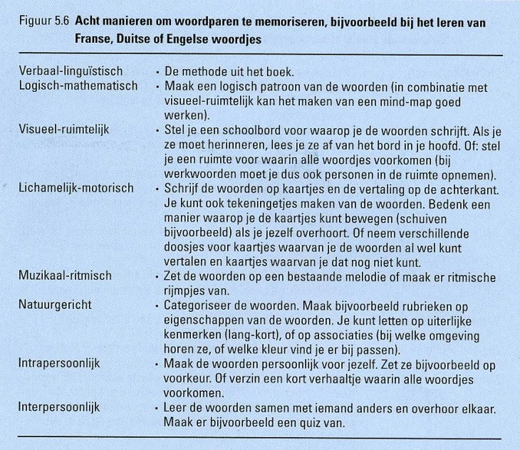

We denken dat leren met gebruik van woord, geluid en kleur effectiever is dan wanneer enkel vraag en antwoord in een overhoorprogramma langs komen. Deze gedachte is gebaseerd op passages die te lezen zijn in enkele handboeken over leren:
In het Handboek Vaardigheden Tweede Fase (Eisma, Leeuwarden 1996) staat ook een hoofdstuk over ‘Feiten en woorden leren’.
Onder het kopje klank-beeldmethode staat: “Zoek een beeld of een plaatje dat een verband legt tussen de betekenis van het vreemde woord en het woord dat dezelfde klank heeft”. Het mag duidelijk zijn dat je deze suggestie met AVD heel concreet kunt invullen.
Ook bij klank-beeldmethode wordt gezegd: “Zoek een woord dat klinkt als het woord waarvan je de betekenis wilt onthouden”. Natuurlijk kun je dit woord inspreken als geluid: "Klinkt als...".
Daarbij kun je de verhaaltjesmethode toepassen in AVD: “Maak voor jezelf een onzinverhaaltje met de woorden die je wilt onthouden”. Je kunt immers ook korte zinnen invoeren.
De wandelingmethode (al bekend uit de oudheid van o.a. Quintilianus) kun je vorm geven door een omgeving te tekenen en als afbeelding in te voeren: “Leg de voorwerpen in gedachten neer op een logische plek in je huis en maak een wandeling langs die plekken”.
Ook in Effectief leren (Wolters-Noordhoff, Groningen 2005), geschreven door Sebo Ebens en Simon Ettekoven, zijn argumenten te vinden om meer zintuigen aan te spreken bij het leren van woorden. In hoofdstuk 5 behandelen zij in kort bestek de theorie van de meervoudige intelligenties, geformuleerd door Howard Gardner. Deze onderscheidt 8 verschillende intelligenties, een soort vormen van aanleg of kanalen die aangesproken kunnen worden bij het leren.
“Gardner stelt dat verschillende leerlingen verschillende intelligenties bezitten en dat het om die reden belangrijk is die verschillen te honoreren en te benutten. In deze opvatting hebben leerlingen dus verschillende intelligenties en niet één. Door het gebruik van meervoudige intelligenties in de onderwijsleersituatie is er een grotere kans dat leerlingen iets aangeboden krijgen op een manier waarmee ze zich verwant voelen. Daardoor zullen ze zich actiever opstellen en meer resultaat boeken” (blz. 111).
Verderop in het hoofdstuk geven de auteurs een aantal uitgewerkte voorbeelden van hoe deze intelligenties in de les kunnen worden aangesproken. Zo laten ze in figuur 5.6 op blz. 123 zien dat er 8 manieren zijn om het memoriseren van woordparen aan te pakken:

Het mag duidelijk zijn dat je bij creatief gebruik van AVD bij bijna alle intelligenties kunt aanknopen:
Ook in het boek Leer als een speer (Maastricht 2004) van Jan-Willem van den Brandhof staat een hoofdstuk over onthouden. “Als je informatie koppelt aan of associeert met dingen die je al weet, blijft ze beter hangen. In je brein is ook alles aan elkaar gekoppeld, dus als je zelf bewust die koppelingen maakt is informatie makkelijker op te halen.” (blz. 110)
Dat soms leerlingen kiezen voor het invoeren van een rare afbeelding of vreemd geluid bij een te leren item, blijkt minder vreemd te zijn dan je zou denken: “Wat je het beste onthoudt zijn dingen die raar of idioot zijn. Dit heet het “Von Restorff-effect” en dat is een belangrijke geheugentechniek. Die techniek komt erop neer dat je gewone, saaie of moeilijk te onthouden informatie in je gedachten (met je rechterhersenhelft!) gek, bizar of abnormaal maakt. Daardoor kan je ze beter onthouden.” (blz.110)
Het arceren van woorden op soort kan ook in AVD. Van den Brandhof zegt hierover: “Als je kleuren gebruikt onthoud je informatie ongeveer 30% beter.”
Een van de vijf methodes van ADV die je kunt selecteren is ‘uitspraak’. Hierbij kun je het te leren woord uitspreken en vervolgens controleren of de uitspraak juist was: “Het kan helpen om dingen hardop uit te spreken. Vooral voor mensen die goed informatie kunnen opnemen met de oren is het handig om zichzelf dingen voor te lezen”. (blz.114)
Als laatste citaat uit ‘Leer als een speer’ kan deze opmerking niet ontbreken: “Gebruik tegelijkertijd zoveel mogelijk zintuigen. Dus maak niet alleen een film (“in je hoofd, liefst een kleurenfilm”, merkt de schrijver even eerder op), maar haal er geluid bij, haal er gevoel, geur en smaak bij als het even kan. Hierdoor gebruik je verschillende delen van je hersenen tegelijk, waardoor je informatie veel beter onthoudt”. (blz.114) De volgende uitdaging is, zo lijkt het, een computerprogamma dat geuren afgeeft (een USB-stick die geuren verspreidt als een soort luchtverfrisser in het stopcontact). Voorlopig hopen we dat Audivididici het leren effectiever en leuker maakt!
Tenslotte, het Handboek Vaardigheden merkt op: “Controleer of de koppeling werkt. De koppelmethode werkt pas als je het na een tijdje bij controleren nog weet.”
Het kan best zijn dat de afbeelding, het geluid, de kleur, de arcering etc. die jezelf hebt aangebracht naar verloop van tijd niet werkt. Pas hem dan aan: de mogelijkheden met AVD zijn legio. Ditzelfde gaat natuurlijk ook op als je een woordenlijst gemaakt door een klasgenoot gebruikt: sommige invullingen zullen voor jou logisch zijn en werken, andere niet. Breng wijzigingen aan en maak de woordenlijst persoonlijk zodat hij voor jou werkt!